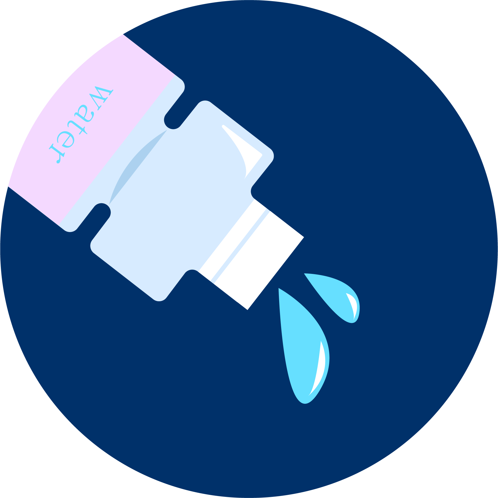
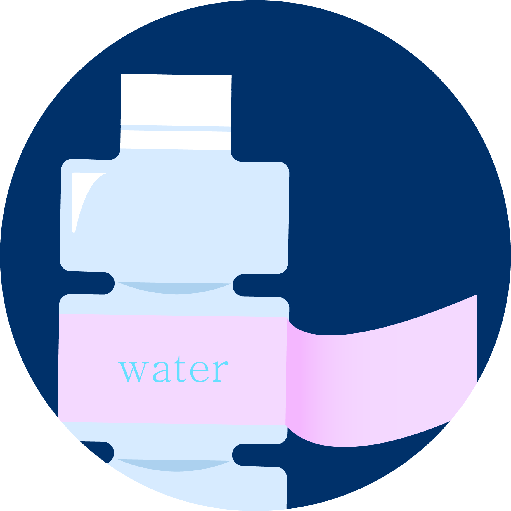
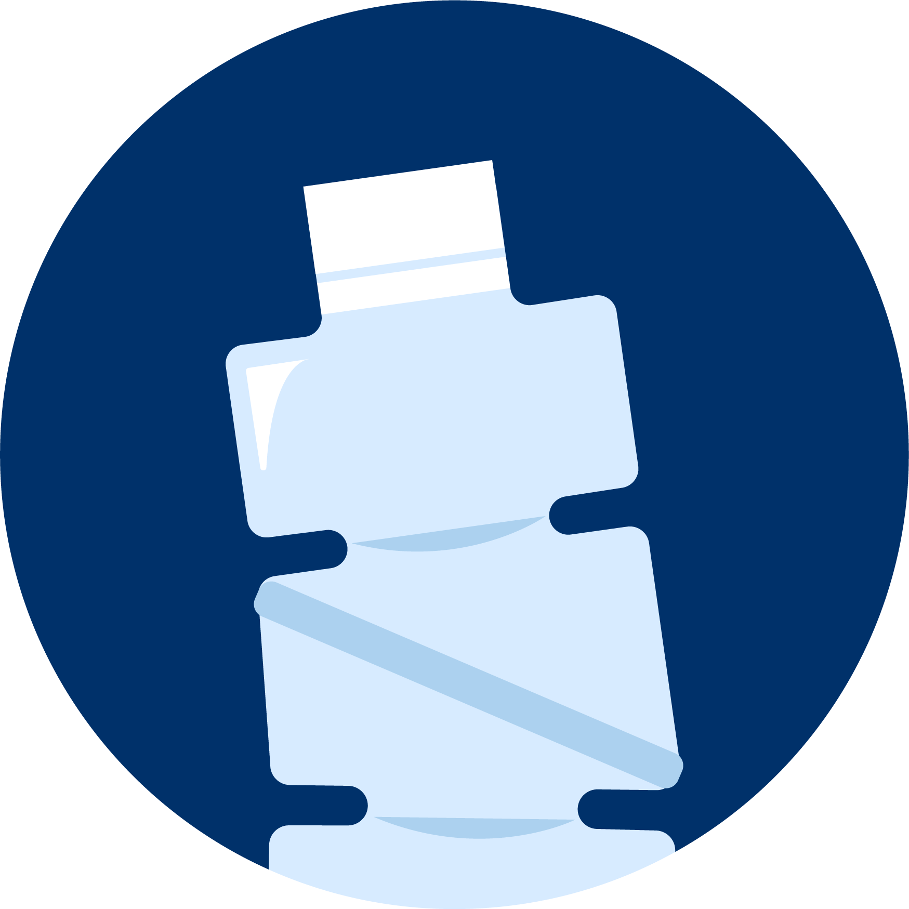

올해부터 투명 페트병과 플라스틱을 구분하여 분리 배출하도록 하고 있습니다. 투명한 페트병의 경우 플라스틱으로 만들었지만 재활용률이 높기 때문에
별도로 분리하여 배출해야 하는데요.
일반적인 유색, 혼합 플라스틱에 비해 오염도가 낮아 세척이 간편하고
의류나 가방, 화장품 병 등으로 재활용되고 있습니다.

내용물은 싸~악 비우기!

라벨을 촥! 제거하기

찌그러뜨리고 뚜껑닫기
잠깐! 주의사항
쓰레기는 수거하는 날에 맞춰 수거작업시간이 되기 전에 배출해야 수거가 가능한데요.
비나 눈이 올 때는 날씨가 갠 후에 쓰레기를 배출하는 것이 좋으며,
일반 쓰레기는 부피를 최대한 줄여 배출하는 것이 좋다고 합니다.
젖은 쓰레기는 물기를 빼고 배출해야 하며,
목재류나 냉장고 등은 대형폐기물로 신고한 후 배출해야 합니다.
가내공업 폐기물은 반드시 사업장용 규격봉투에 담아
배출자 인적 사항 스티커를 부착하여 배출해야 한다고 합니다.
음식물 쓰레기는 수분이 많아 물기를 빼고 버려도 매립 후에
다량의 침출수를 발생시키는데요.
침출수는 지하수를 오염시키고 생활환경을 더럽히는 원인이 되는 등
각종 전염병을 유발한다고 하니, 분리수거를 통해 배출하는 것이 좋습니다.